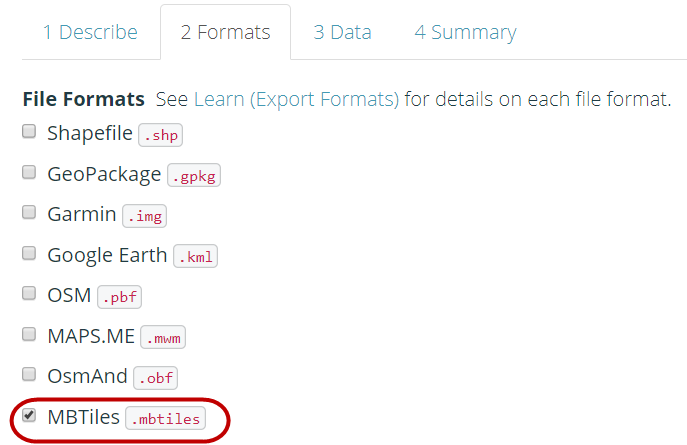
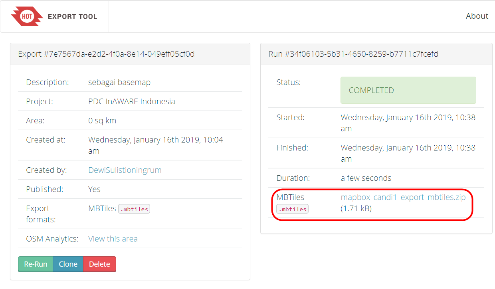

2.7 Creating MBTiles for ODK Collect
Course Objectives
When you use the ODK Collect application to conduct field surveys, sometimes you will have difficulty in determining objects in the application. You can use MBTiles file for background map, which is a satellite imagery, to make it easier for you to identify objects in the field. By the end of this section, you should be able to:
- Understand the concept of MBTiles
- Learn create MBTiles using Export Tool
Learning Activities
The Definition of MBTiles
MBTiles is the spatial data format for storing several map tiles that are combined into one file as raster format, so that it looks like satellite imagery. You can use MBTiles as a basemap in the ODK Collect, which makes it easier for users to mark objects in the field. Basemap is a basic map that is used as the background of an application. It can be in the form of satellite imagery and OSM map.

Creating MBTiles using Export Tool
Export Tool is one of the sites that is used to download OpenStreetMap data for free based on certain features and regions. Spatial data formats that are commonly used, namely Shapefile (.shp), GeoPackage (.gpkg), and MBTiles (.mbtiles). The steps to create MBTiles using export tools are:
- Open your web browser and go to link URL https://export.hotosm.org/, you need to login first to your OpenStreetMap account. If you do not have an account, you should go to https://www.openstreetmap.org to create one. You can refer to Getting Started with OpenStreetMap for the details.
- After you successfully login, click Start Exporting.

- Complete the dialog box on the left as a project description and select the area that you want. Area selection can be made with several ways using tools in the right panel. If you have administrative boundary in .geojson format, you can use the Import option.
| 💡Tips:💡 |
|---|
| You should not make too large area selection for MBTiles area, because it will cause failure during the process. |
- Next step, click Format Menu → Give a check mark on MBTiles option.

-
Then click on the Data menu section, you must copy the URL address of the tilemap from the satellite imagery that will be used as the basemap. You might only see OpenStreetMap as one of the options for creating MBTiles. By default Export Tools only provides OpenStreetMap as the background for your MBTiles by default.
-
After you paste the link, you can swipe to the left and select the link that you entered.

- You can change the Zoom Range setting to select the zoom level for MBTiles display. We need to keep in mind that if the distance between the zoom range is getting farther away, the file size will be even greater.

- Last step is select Summary menu, this section will show the summary of your project. If your project wants to be seen by other users, you can choose Publish this Export. Then click Create Export to process the creation of MBTiles.

- The process of making MBTiles will take several minutes depending on the internet network, the area size, and the zoom range that has been set previously. You do not need to wait, because the export tool will notify you through email when the process is complete. You can also see other projects that have been created in the Exports Menu.
- After the process completed, the project status should be changed to COMPLETED. Click the file name in the blue color to download .mbtiles file directly.

- MBTiles can be opened using mapping software such as QGIS, so that it displays offline satellite imagery. This way can be used to check the .mbtiles file first before inserting it into the ODK Collect application, open QGIS → Add Raster Layer.

[Quiz] Check Your Knowledge
-
What is spatial data format for storing several map tiles that are combined into one file as raster format?
a. MBTiles
b. QTiles
c. RasterTiles
d. Geopackage
-
You can create MBTiles for your preferred area using Export Tool site by define satellite imagery URL in the MBTiles source field
a. True
b. False
-
The process of making MBTiles will take several minutes depending on area size and zoom range that has been set previously.
a. True
b. False
Answer: 1.A | 2.A |3. A
Activity Checklist
By the end of this section, you should be able to:
- Understand the definition of MBTiles
- Create MBTiles using Export Tool
Additional resources
- Build MBTiles using QGIS: https://www.fulcrumapp.com/blog/mbtiles-from-qgis/